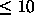
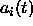
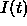
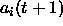
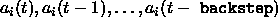
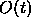
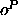
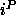
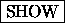

This is a learning algorithm for recurrent networks that are updated
in discrete time steps (non-fixpoint networks). These networks may
contain any number of feedback loops in their connectivity graph. The
only restriction in this implementation is that there may be no
connections between input units . The gradients of the weights in the
recurrent network are approximated using an feedforward network with a
fixed number of layers. Each layer t contains all activations
. The gradients of the weights in the
recurrent network are approximated using an feedforward network with a
fixed number of layers. Each layer t contains all activations
 of the recurrent network at time step t. The highest layer
contains the most recent activations at time t=0. These activations
are calculated synchronously, using only the activations at t=1 in
the layer below. The weight matrices between successive layers are
all identical. To calculate an exact gradient for an input pattern
sequence of length T, the feedforward network needs T+1 layers if
an output pattern should be generated after the last pattern of the
input sequence. This transformation of a recurrent network into a
equivalent feedforward network was first described in
[MP69], p. 145 and the application of backpropagation
learning to these networks was introduced in [RHW86].
of the recurrent network at time step t. The highest layer
contains the most recent activations at time t=0. These activations
are calculated synchronously, using only the activations at t=1 in
the layer below. The weight matrices between successive layers are
all identical. To calculate an exact gradient for an input pattern
sequence of length T, the feedforward network needs T+1 layers if
an output pattern should be generated after the last pattern of the
input sequence. This transformation of a recurrent network into a
equivalent feedforward network was first described in
[MP69], p. 145 and the application of backpropagation
learning to these networks was introduced in [RHW86].
To avoid deep networks for long sequences, it is possible to use only a fixed number of layers to store the activations back in time. This method of truncated backpropagation through time is described in [Zip90] and is used here. An improved feature in this implementation is the combination with the quickprop algorithm by [Fah88] for weight adaption. The number of additional copies of network activations is controlled by the parameter backstep. Since the setting of backstep virtually generates a hierarchical network with backstep + 1 layers and error information during backpropagation is diminished very rapidly in deep networks, the number of additional activation copies is limited by backstep

.There are three versions of backpropagation through time available:
A recurrent network has to start processing a sequence of patterns with defined activations. All activities in the network may be set to zero by applying an input pattern containing only zero values. If such all-zero patterns are part of normal input patterns, an extra input unit has to be added for reset control. If this reset unit is set to 1, the network is in the free running mode. If the reset unit and all normal input units are set to 0, all activations in the network are set to 0 and all stored activations are cleared as well.
The processing of an input pattern  with a set of non-input
activations
with a set of non-input
activations

is performed as follows:
 is copied to the input units to become a
subset of the existing unit activations
is copied to the input units to become a
subset of the existing unit activations  of the whole net.
of the whole net.

contains only zero activations, all activations
and all stored activations
are set to .
.
 are calculated synchronously using
the activation function and activation values
are calculated synchronously using
the activation function and activation values  .
.

is always compared with the output subset of the new activations .
.
Therefore there is exactly one synchronous update step between an input and an output pattern with the same pattern number.
If an input pattern has to be processed with more than one network update, there has to be a delay between corresponding input and output patterns. If an output pattern

is the n-th pattern after an input pattern
, the input pattern has been processed in n+1 update steps by the network. These n+1 steps may correspond to n hidden layers processing the pattern or a recurrent processing path through the network with n+1 steps. Because of this pipelined processing of a pattern sequence, the number of hidden layers that may develop during training in a fully recurrent network is influenced by the delay between corresponding input and output patterns. If the network has a defined hierarchical topology without shortcut connections between n different hidden layers, an output pattern should be the n-th pattern after its corresponding input pattern in the pattern file.
An example illustrating this relation is given with the delayed XOR
network in the network file xor-rec.net and the pattern files
xor-rec1.pat and xor-rec2.pat. With the patterns
xor-rec1.pat, the task is to compute the XOR function of the
previous input pattern. In xor-rec2.pat, there is a delay of
2 patterns for the result of the XOR of the input pattern. Using a
fixed network topology with shortcut connections, the BPTT learning
algorithm develops solutions with a different number of processing
steps using the shortcut connections from the first hidden layer to
the output layer to solve the task in xor-rec1.pat. To map the
patterns in xor-rec2.pat the result is first calculated in the
second hidden layer and copied from there to the output layer during
the next update step .
.
The update function BPTT-Order performs the synchronous update
of the network and detects reset patterns. If a network is tested
using the  button in the control panel, the internal
activations and the output activation of the output units are first
overwritten with the values in the target pattern, depending on the
setting of the button
button in the control panel, the internal
activations and the output activation of the output units are first
overwritten with the values in the target pattern, depending on the
setting of the button

. To provide correct activations on feedback connections leading out of the output units in the following network update, all output activations are copied to the units initial activation values i_act after each network update and are copied back from i_act to out before each update. The non-input activation values may therefore be influenced before a network update by changing the initial activation values i_act.
If the network has to be reset by stepping over a reset pattern with
the  button, keep in mind that after clicking
button, keep in mind that after clicking  ,
the pattern number is increased first, the new input pattern is copied
into the input layer second, and then the update function is called.
So to reset the network, the current pattern must be set to the pattern
directly preceding the reset pattern.
,
the pattern number is increased first, the new input pattern is copied
into the input layer second, and then the update function is called.
So to reset the network, the current pattern must be set to the pattern
directly preceding the reset pattern.